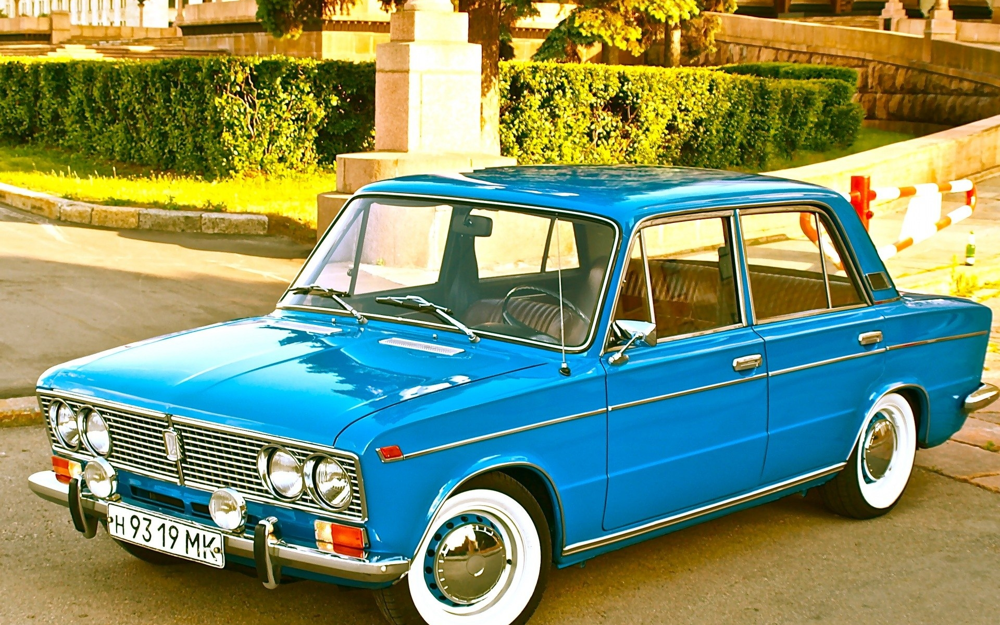

ВАЗ-2101 «Жигули» — советский заднеприводный
легковой автомобиль малого класса с кузовом
типа седан. Первая модель, выпущенная на Волжском
автомобильном заводе. За выпуск данной модели в мае
1972 года Волжскому автомобильному заводу была вручена
Международная премия «Золотой Меркурий». В 2000 году
ВАЗ-2101 был назван лучшим отечественным автомобилем
XX века по результатам всероссийского опроса,
проведённого журналом «За рулём». За все время
производства (с 1970 по 1988 годы) АвтоВАЗ выпустил
4,85 млн автомобилей ВАЗ-2101 всех модификаций с
кузовом седан.
